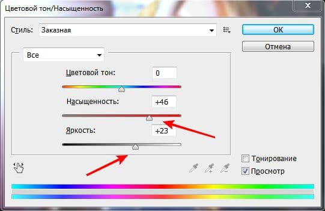
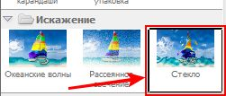
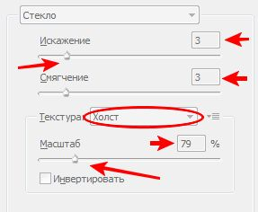
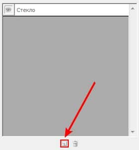

Как же сделать из обычной фотографии рисованную картину? Фотография – это конечно хорошо, но многие хотели бы себе повесить на стену свой рисованный портрет или портрет своих родных, либо просто красивый пейзаж. Для этого нам понадобится бесплатная программа Photoshop, которая доступна в сети. Многие хотели бы научиться ею пользоваться без специальных курсов, именно этим мы и занимаемся.
Итак, сначала нужно открыть фотографию, которую Вы решили переделать в картину, размером где-то 800*600 пикселей. Стоит обратить внимание, что чем больше разрешение фото, тем хуже будет картина, т.е. мазки будут меньше видны. Поэтому надо выбирать средний размер. После можете поэкспериментировать, чтоб проверить эту теорию.
Затем надо найти команду Цветовой тон/Насыщенность (Hue/Saturation) в меню Изображение/Коррекция (Image/Adjustments) либо просто нажать Ctrl+U.

В открывшимся окне надо увеличить значение Насыщенности (Saturation) до 50 , что видно на рисунке, далее подтвердить, нажимая на ОК, чтоб получились насыщеннее цвета. Следующим шагом будет – выбрать из меню Фильтр (Filter) команду Галерея фильтров (Filter Gallery).

В появившимся окне надо выбрать Искажение (Distort) и нажать на фильтр Стекло (Glass), как видно на рисунке.В настройках справа там где написано Смягчение и Искажение задаем значение 3 обоим параметрам, в блоке текстура (Texture) выбираем в выпадающем списке команду Холст (Canvas), а где у нас указан Маштаб (Scaling) надо изменить значение на 79%. Но завершать кнопкой ОК пока не стоит.

Затем надо выбрать Создать слой эффектов (New effect layer), который расположен внизу, там, где находится мусорная корзина.

Потом надо нажать на Масляная Живопись, после выбрать фильтр Рисование пальцем (Paint Daubs). Где указан параметр Размер кисти (Brush Size), надо задать 4, а там где написано Резкость (Sharpness) задать 1, а в появившимся списке Тип кисти (Brush Type) надо выбрать значение Простой (Simple).
Следующим шагом будет – нажать на значок Создать новый слой эффектов (New effect layer) в нижней части окна. Из перечня надо выбрать набор Мазки кисти (Brush Strokes) и нажать на фильтр Наклонные мазки (Angled Strokes). Для значения Баланс направления (Direction Balance) надо выбрать 46, для другого параметра Длина мазка (Stroke Length) – 3, а там где написано Резкость (Sharpness) выбрать 1. Нажмите на значок Создать слой эффектов (New effect layer) внизу окна. Чтобы добавить текстуру в виде холста, нужно найти и выбрать набор Текстура (Texture) и нажать на фильтр Текстуризатор (Texturizer). В появившимся списке Текстура (Textura) надо выбрать значение Холст (Canvas), для характеристики Масштаб (Scaling) надо задать 65%, а где указан параметр Рельеф (Relief) – выбрать 2, в списке Источник света (Light) выбрать параметр Сверху слева (Top Left). И наконец, нажмите ОК, чтоб применить все изменения в фильтрах к рисунку. Нажмите на комбинацию клавиш, чтоб создать копию слоя. Далее нужно нажать на комбинацию клавиш для уменьшения насыщенности цветов. Выбрав палитру Layers, надо изменить положение Normal на Overlay, как видно на изображении. Затем выберите Барельеф (Emboss) из меню Фильтр-Стилизация (Filtre-Stylize). В открывшимся окне Барельеф (Emboss), где указан параметр Угол (Angle) выберите 135°, на характеристике Высота (Height) – 1, а для характеристики Степень (Amount) – 500% (что видно на рисунке), после нажмите на завершение ОК.
Выберите палитру Слои (Layers) и там уменьшите параметр Непрозрачность (Opacity) до 40%, чтоб завершить эффект. На этом все, обычная фотография превратилась в настоящее произведение. Все последующие изображения можно делать примерно также, но каждая может иметь свою особенность.